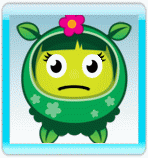

Vous avez du mal à obtenir votre cinquième étoile dans un niveau, ou n'arrivez pas à comprendre comment terminer le suivant ?
Voici quelques astuces pour vous guider :
- Si vous avez quelques difficultés avec les principes de base du jeu, le tutoriel est là pour vous aider.
- Ne passez pas devant un panneau ou une astuce sans prendre le temps de le lire, vous risquez de louper de précieux conseils !
- Essayez de nourrir chacune des fleurs régulièrement, sans en laisser de côté. Si vous vous concentrez trop longtemps sur une seule ou certaines d'entre elles, vous pourriez ensuite manquer de temps pour vous occuper convenablement des autres.
- Prêtez attention à ce que vous dit chaque fleur lorsque vous la nourrissez. Assurez-vous de bien donner à chacune du pollen de la bonne couleur.
- Apprenez à mélanger les couleurs pour obtenir celles dont vous avez besoin. Saviez-vous que vous pouvez les mélanger dans le ciel également ?
- Vous êtes perdu(e) ? Vous n'arrivez pas à trouver un niveau, ou les graines dont vous avez besoin ? Prenez le temps d'explorer les environs, et essayez de suivre les chemins.
- Apprenez à utiliser la carte. Grâce à elle, vous pouvez vous téléporter dans n'importe quel niveau auquel vous avez déjà joué, et voir les nains et les niveaux qu'il vous reste à vaincre.
- Vous n'arrivez pas à obtenir un classement parfait de 5 étoiles dans un niveau ? Ne vous en faites pas et laissez donc cela pour plus tard. Quand vous aurez acquis de nouveaux pouvoirs, essayez de rejouer aux niveaux déjà terminés : les résultats pourraient vous surprendre !
- Les joueurs experts parviennent à se concentrer uniquement sur les feux d'artifice : déclenchez-en suffisamment, encore et encore, et vous n'aurez plus jamais à vous soucier de devoir nourrir les fleurs.
- Essayez de lancer vos pollens en plaçant Follie aussi loin des fleurs que possible. Plus elle en sera éloignée, et plus vous aurez de chances de déclencher des feux d'artifice.
- Dans un niveau, presque n'importe quelle action vous fait gagner des points, mais enchaîner les feux d'artifice vous rapporte à coup sûr d'énormes bonus. De gros enchaînements peuvent même vous rapporter un bonus colossal de 500.000 points !